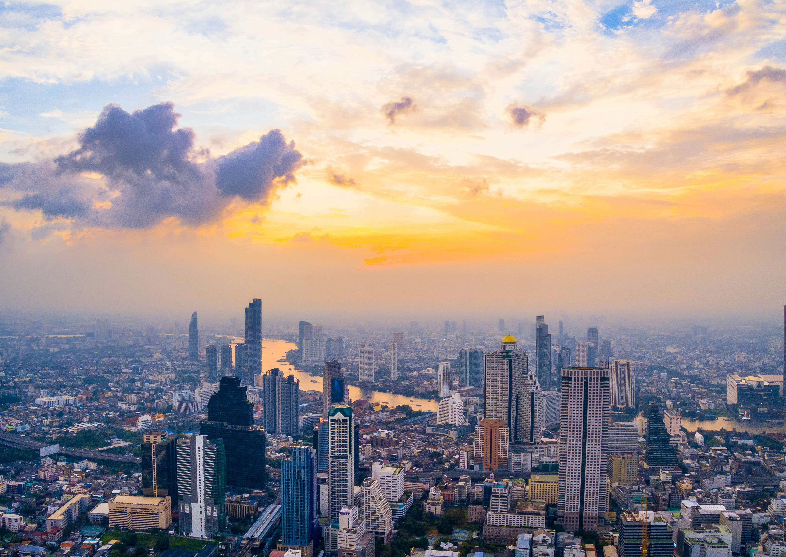
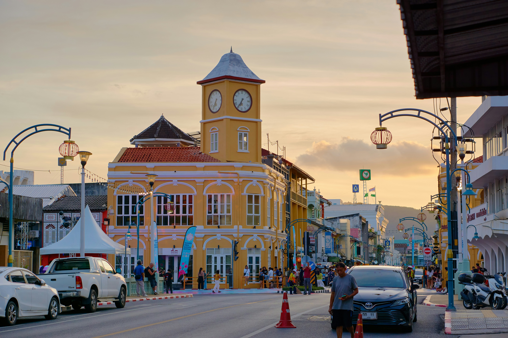
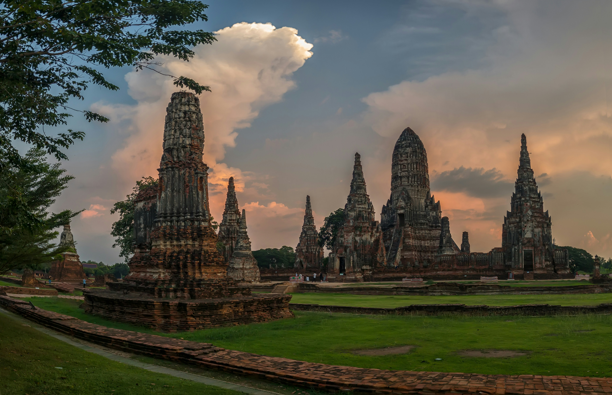

Welke steden wilt u bezoeken?
Thailand kent prachtige steden. Van groot tot klein, natuur tot cultuur, hier staan een aantal leuke steden aangeprezen met hun hoogtepunten die het zeker waard zijn om te bezoeken op jouw reis naar Thailand!
Bangkok
Bangkok is de hoofdstad van Thailand en een van de grootste steden van Zuidoost-Azië. De stad staat bekend om haar indrukwekkende tempels, drukke straten en kleurrijke markten. Een beroemde bezienswaardigheid is het Grand Palace, een prachtig paleis met gouden details. Ook de tempel Wat Arun is populair bij toeristen. In Bangkok vind je traditionele Thaise restaurants, moderne winkelcentra en gezellige straatkraampjes waar je lokaal eten kunt proeven. Daarnaast kun je een boottocht maken over de Chao Phraya-rivier. Bangkok is een bijzondere bestemming waar de Thaise cultuur en het moderne stadsleven samenkomen.

Chiang Mai
Chiang Mai is een stad in het noorden van Thailand en staat bekend om haar prachtige natuur, eeuwenoude tempels en traditionele cultuur. De stad wordt omringd door groene bergen en bossen, waardoor het een populaire bestemming is voor natuurliefhebbers. Een bekende bezienswaardigheid is Wat Phra That Doi Suthep, een boeddhistische tempel op een berg met een indrukwekkend uitzicht over de stad. In het historische centrum vind je gezellige markten, kleine winkeltjes en restaurants met traditionele Thaise gerechten. Ook kun je in de omgeving watervallen bezoeken en wandelingen maken. Chiang Mai combineert rust, cultuur en avontuur.

Chiang Rai
Chiang Rai is een stad in het noorden van Thailand, bekend om haar bijzondere tempels en prachtige natuur. Een van de beroemdste bezienswaardigheden is de Witte Tempel, Wat Rong Khun, die opvalt door haar witte kleur en gedetailleerde versieringen. Ook de Blauwe Tempel, Wat Rong Suea Ten, is populair vanwege haar opvallende blauwe interieur. In de omgeving van Chiang Rai vind je groene bergen, theeplantages en traditionele dorpjes. Daarnaast kun je de Gouden Driehoek bezoeken, het gebied waar Thailand, Laos en Myanmar samenkomen. Chiang Rai is een interessante bestemming voor reizigers die cultuur, kunst en natuur willen ontdekken.

Phuket
Phuket is het grootste eiland van Thailand en staat bekend om zijn prachtige stranden, helderblauwe zee en levendige sfeer. Phuket-stad, de hoofdstad van het eiland, heeft kleurrijke gebouwen in Chinees-Portugese stijl en gezellige straatmarkten. Hier kun je lokale gerechten proeven en souvenirs kopen. Langs de kust vind je populaire stranden, zoals Patong Beach, waar je kunt zwemmen, zonnen en watersporten beoefenen. Ook kun je boottochten maken naar nabijgelegen eilanden, zoals de beroemde Phi Phi-eilanden. Daarnaast zijn er boeddhistische tempels en uitzichtpunten die een bezoek waard zijn. Phuket is een ideale bestemming voor reizigers die natuur, cultuur en ontspanning willen combineren.

Ayutthaya
Ayutthaya is een historische stad in Thailand, ongeveer 80 kilometer ten noorden van Bangkok. De stad was vroeger de hoofdstad van het koninkrijk Ayutthaya en was een belangrijk handelscentrum. Tegenwoordig staat Ayutthaya vooral bekend om haar indrukwekkende tempelruïnes en eeuwenoude boeddhabeelden. Het historische park van Ayutthaya staat op de Werelderfgoedlijst van UNESCO. Een beroemde bezienswaardigheid is Wat Mahathat, waar een boeddhahoofd tussen de wortels van een boom groeit. Bezoekers kunnen de oude tempels ontdekken per fiets of boot. Ayutthaya is een bijzondere bestemming voor reizigers die meer willen leren over de geschiedenis en cultuur van Thailand.

Krabi
Krabi is een provincie in het zuiden van Thailand, bekend om haar indrukwekkende rotsformaties, tropische stranden en helderblauwe water. De stad Krabi ligt aan de kust en vormt een goede uitvalsbasis om de omgeving te verkennen. Een populaire bestemming is Railay Beach, dat wordt omringd door hoge kalkstenen rotsen en alleen per boot bereikbaar is. Bezoekers kunnen hier zwemmen, kajakken en rotsklimmen. Ook kun je vanuit Krabi boottochten maken naar nabijgelegen eilanden, zoals de beroemde Hong-eilanden. In de omgeving vind je daarnaast groene jungle, watervallen en natuurlijke warmwaterbronnen. Krabi is ideaal voor reizigers die van natuur, avontuur en ontspanning houden.